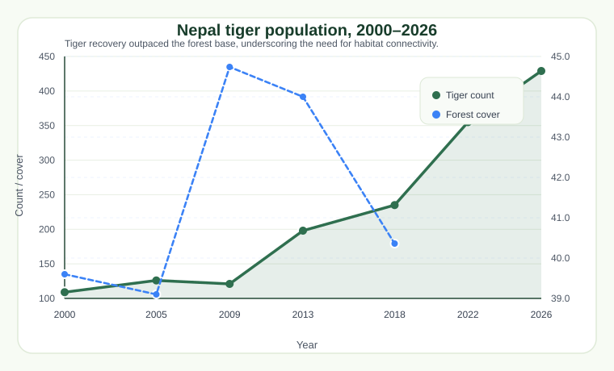
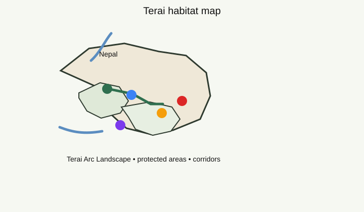

Tiger population
429
Wild tigers recorded in the 2026 census.
ESIIL • Data • Ecology • Conservation
This presentation blends research, motion, and immersive visuals to show how tiger recovery has surged while the forest base remains a precious but limited resource. The result is a bold, data-driven story that feels more like a digital conservation showcase than a static report.

Tiger population
Wild tigers recorded in the 2026 census.
Growth
Increase from the 2009 baseline of 121.
Forest cover
Broadly stable, but still highly consequential for habitat quality.
Habitat focus
Most tigers remain concentrated in the Terai Arc Landscape.
Main outcome
Nepal’s conservation record is strong and clear. Tigers increased substantially, while forest cover remained broadly stable. Yet the habitat base is still limited enough that corridor protection, restoration, and stewardship remain essential for continued growth.
Time series
Tiger counts rise sharply while forest cover stays within a narrow band, highlighting the need for connected habitat.
Park comparison
Parsa and Banke show the strongest gains, while Bardiya dropped after 2022.
Visual gallery



ESIIL feel
This version is designed to feel more like a modern conservation portfolio page with depth, rhythm, and a polished scientific aesthetic.
Timeline map view
2009
2013
2018
2026
The map-style panels show how tiger recovery became more spatially visible and more concentrated in the Terai corridor over time.
Tiger locations
Geographic analysis
The Terai Arc Landscape remains the core tiger habitat, linked by forests, rivers, protected areas, and community-managed corridors.
Interpretation
The forest estate appears stable, but the habitat base must remain connected and protected to sustain future tiger growth.
Conclusion
Nepal’s tiger recovery is one of the clearest conservation success stories in Asia. Tiger numbers rose from 121 to 429, while the core habitat remained centered in the Terai landscape, especially in Chitwan, Parsa, Banke, Bardiya, and Shuklaphanta. The strongest evidence suggests that protection, habitat management, and corridor continuity all played a central role in making recovery visible across the country.
The most important lesson is that tiger expansion is not only about a rising population count. It also depends on filling habitat gaps, protecting connected forests, and keeping the landscape resilient enough for future growth. In short, Nepal has made real progress, but the next frontier is to make the habitat base stronger, wider, and more connected.